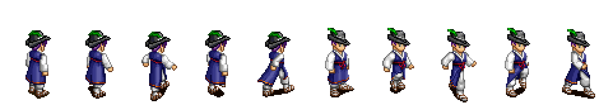

한눈에
지금 어디까지 왔나
서버를 안전하게 만드는 일과 화면을 만드는 일이 함께 갑니다. 서버는 낯선 입력에 버티는지 확인하고 고치는 중이고, 화면은 원작 자료로 시안을 세우는 중입니다.
가장 최근에 넘은 고비. 원작의 사람과 괴물 그림을 열었습니다. 캐릭터는 몸·옷·모자가
따로 저장돼 겹쳐 그리는 방식이고(khan.dat 20,821개), 괴물은 서기·걷기·공격 구간이
파일 머리말에 적힌 애니메이션입니다(hades.dat 742개). 이제 시안의 사람은 자리표가
아니라 원작 그림입니다.
그 앞의 고비. 같은 시험 23개를 원본 서버에 돌리면 7개가 실패합니다. 그중 하나는 악성 패킷 한 개로 서버 프로세스가 통째로 꺼지는 것이었고, 다른 하나는 캐릭터 이름만 골라서 서버가 쓸 수 있는 아무 위치에나 파일을 만들 수 있는 것이었습니다. 지금은 23개 모두 통과합니다.
다음에 할 일
TILEAS.BMP는 고정 크기가 아니라 별도 해석이 필요합니다. 사람과 괴물은 끝났습니다지금계획
로드맵
세 개의 관문이 있습니다. 각 관문을 넘기 전에는 다음 단계로 가지 않기로 계획서에 못박아 두었습니다.
원문은 docs/hades-p0-stabilization-plan.md.
S0 · 현행 동작 기록 통과
고치기 전에 서버가 무엇을 하는지 먼저 녹음합니다. 녹음본이 있어야 나중에 "원래 이랬나, 내가 깼나"를 가릴 수 있습니다.
S1 · 연동 안전선 4 / 8
모바일을 실제로 붙이기 전에 없애야 할 치명적 결함들입니다. 이 관문을 넘어야 실제 서버에 연결합니다.
S2 · 지인 테스트 안전선 대기
지인 5~10명에게 나눠주기 전 단계입니다. 비밀번호 저장 방식, 로그인 남용 방지, 정상 종료, 지원 런타임 이전, 10인 30분 부하 시험.
어떻게 일하고 있나
작업 흐름
저장소가 둘로 나뉩니다
원본 서버는 남의 저장소입니다. 그래서 읽기 전용으로 두고, 고칠 것은 개인 사본(fork)에서 고칩니다. 이 작업 공간은 그 사본의 어느 시점을 쓸지만 가리킵니다. 원본을 망가뜨릴 위험이 없습니다.
| 저장소 | 역할 | 현재 가지 |
|---|---|---|
| 이 작업 공간 | 문서, 시험, 화면 시안, 도구 | test/hades-characterization |
| Hades 개인 사본 | 서버 코드 수정 | fix/hades-network-boundary |
| Hades 원본 | 손대지 않음 | upstream/master |
쌓아 올리는 가지 (Graphite)
큰 변경을 한 덩어리로 올리지 않고, 작은 가지를 차곡차곡 쌓습니다. 아래 가지가 승인되면 그 위에 쌓은 가지가 따라 올라갑니다. 하나가 잘못돼도 그 가지만 되돌리면 되고, 검토하는 사람도 한 번에 한 가지 변경만 봅니다. 아직 원격에 올리지 않았으므로 지금은 전부 이 컴퓨터 안에 있습니다.
지금까지 한 일
작업 공간서버 사본 — 실제로 고친 결함
보이는 것
화면
배치 규칙은 와이어프레임 문서가 정했고, 시안은 그 규칙대로 세운 실제 화면입니다. 아래 두 페이지는 브라우저로 열면 직접 눌러볼 수 있습니다. 세로와 가로를 처음부터 함께 만들었으니 두 페이지 모두 방향을 바꿔 보세요.
그림과 데이터
자산
자산은 이 저장소의 원본 .dat에서 직접 뽑습니다. 설치된 클라이언트와 대조한 결과
10개 중 9개가 바이트 단위로 같고 setoa.dat만 버전이 다릅니다. 도구는
tools/dat-extract.
| 대상 | 상태 | 비고 |
|---|---|---|
| 지면 타일 | 읽힘 | seo.dat 에서 19,243장, 팔레트 74개, 팔레트 표 488개 |
| 맵 | 그려짐 | 맵 5개. 안전 가옥(lod1.map) 30×31칸의 바닥을 실제로 그렸습니다 |
| 캐릭터 | 읽힘 | khan.dat 10,417개(남) · khan2.dat 10,404개(여). 몸·옷·모자를 겹쳐 한 사람을 만듭니다. 동작 구조는 별도 문서 |
| 괴물 | 읽힘 | hades.dat 742마리. 서기·걷기·공격 구간이 파일에 적혀 있어 그대로 움직입니다 |
| 사물 | 읽힘 | ia.dat 19,664개. 벽걸이·장식장·탁자 같은 실내 물건입니다(압축 해제 필요) |
| 벽 | 미해결 | TILEAS.BMP는 고정 크기 타일이 아니어서 별도 해석이 필요합니다 |
| 아이템 아이콘 | 미착수 | 인벤토리 화면에 필요합니다 |
| 이야기 삽화·음악 | 미착수 | Legend.dat 에 삽화와 음악 165곡 |

hades.dat의 742마리 중 열여섯을 골라 서 있는 자세만 뽑았습니다.
늑대·거미·기사·상인·해골 등 각자의 팔레트로 칠해집니다.
mb00101) 위에 푸른 도포(mi00101)와
깃털 모자(MH28501)를 겹쳐 만든 것입니다. 앞의 다섯은 등을 보이고, 뒤의 다섯은 앞을 봅니다.정한 것과 남은 것
결정
| 결정 | 내용 | 상태 |
|---|---|---|
| 게임 엔진 | Godot 4.6 + C#. 안드로이드 내보내기와 실기기 실행까지 확인했습니다 | 확정 |
| 서버 | Hades를 그대로 쓰고 안전한 부분만 고칩니다. 전면 재작성·DB 교체는 하지 않습니다 | 확정 |
| UI 언어 | 우리가 만드는 문구는 한국어, 서버가 보내는 메시지는 영문 그대로 | 확정 |
| 한글 이름 | 지원합니다. 서버 프로토콜이 이미 한글을 나르고, 시험으로 고정해 두었습니다 | 확정 |
| 자산 출처 | 이 저장소의 원본 .dat. 다른 곳의 복원본은 쓰지 않습니다 | 확정 |
| 이동 패드 | 화면을 꽤 가립니다. 반투명·자동 흐림·접기 중 무엇으로 할지 | 결정 필요 |
| 세로 모드 | 지금은 가로 전용입니다. 세로도 지원할지 | 결정 필요 |